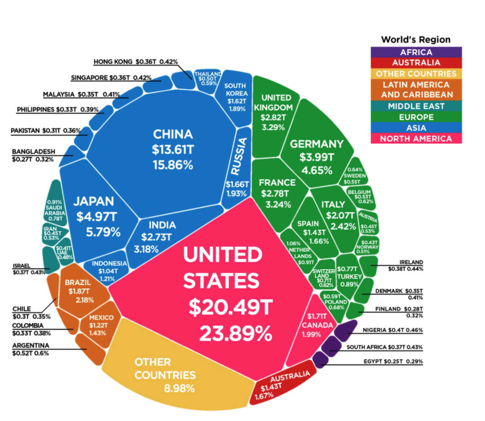
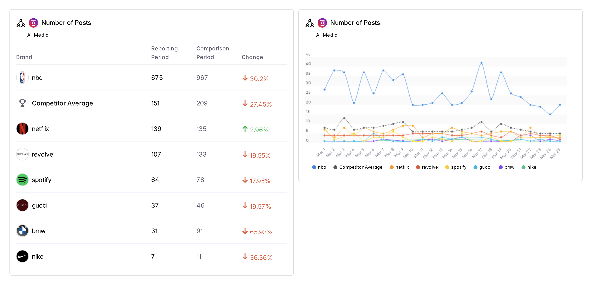
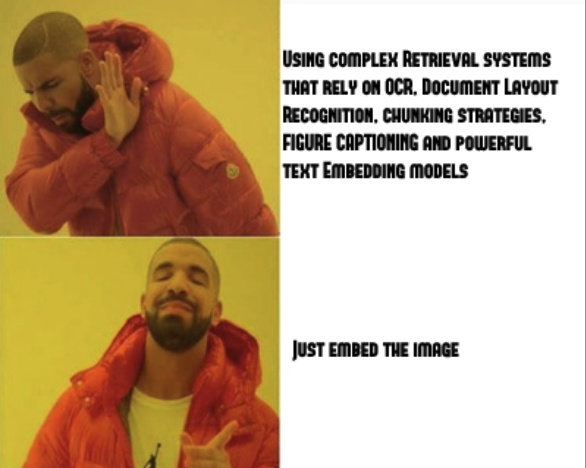
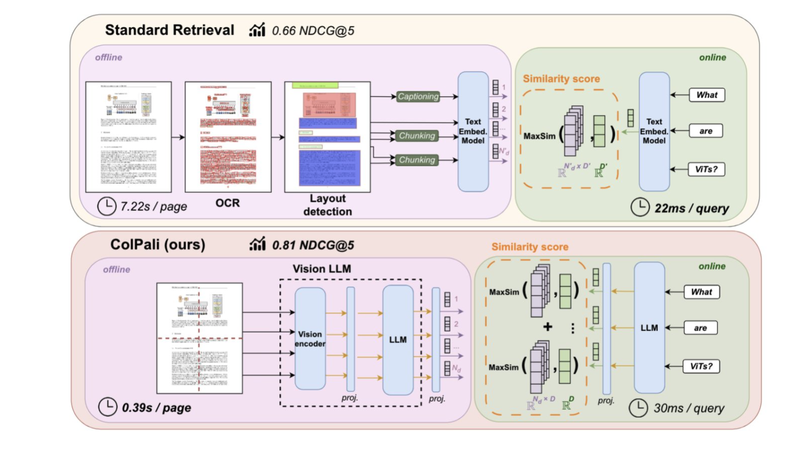

# create an account at modal.com
pip install modal
modal setup
Hello Modal
import modalimport timeapp = modal.App("hello-modal")@app.function()def f(i): time.sleep(1)print(f"hello modal! {i} + {i} is {i+i}\n")return i@app.local_entrypoint()def main():print("This is running locally")print(f.local(1))print("This is running remotely on Modal")print(f.remote(2))print("This is running in parallel and remotely on Modal") total =0for ret in f.map(range(500)): total += retprint(total)
modal run hello_modal.py
show use of allow_concurrent_inputs=100, concurrency_limit=1
Debugging Is Easy
Instantly create a new container and shell into it
modal shell hello_modal.py::f
list containers and open interactive shell
modal container list
modal container exec <container_id> /bin/bash
drop into an ipython REPL at any point in the code
modal.interact()
import IPython
IPython.embed()
modal run -i hello_modal.py
More About Modal
Not a wrapper on top of Kubernetes or Docker.
They’ve built their own systems from scratch in Rust, including a container runtime, custom file system, custom image builder, and custom job scheduler.
Write Python code and execute it in the cloud in seconds
Serverless function platforms have constraints. A lot of them, too!
Functions on AWS Lambda are limited to 15-minute runs and 50 MB images. As of 2024, they can only use 3 CPUs (6 threads) and 10 GB of memory. Response bandwidth is 16 Mbps.
Google Cloud Run is a bit better, with 4 CPUs and 32 GB of memory, plus 75 Mbps bandwidth.
Cloudflare Workers are the most restricted. Their images can only be 10 MB in size and have 6 HTTP connections. Execution is limited to 30 seconds of CPU time, 128 MB of memory.
But modern compute workloads can be much more demanding: AI inference, training neural networks, rendering graphics, simulating physics, running data pipelines, and so on.
Modal containers can each use up to 64 CPUs, 336 GB of memory, and 8 Nvidia H100 GPUs. And they may need to download up to hundreds of gigabytes of model weights and image data on container startup.
Spin up and shut down quickly, since having any idle time is expensive. Scale to zero and bill by the second.
Modal containers are potentially long-running and compute-heavy, with big inputs and outputs. This is the opposite of what “serverless” is usually good at.
We will be using Qwen2-VL-7B-Instruct for this demo.
We will deploy this model not as a web endpoint, but as a function that can be called from any other python context, including from within other Modal containers.
Image Example 1
modal run qwen2_vl_78_Instruct.py
Image Example 1
The image depicts a small, tropical island with a white sandy beach surrounded by crystal-clear turquoise waters. The island is covered with lush greenery and palm trees, and there is a small structure on the beach. The sky is mostly clear with a few scattered clouds.
This image depicts a futuristic, floating structure nestled within a lush, verdant landscape. The structure appears to be an abandoned or repurposed aircraft, possibly a large jet or a military transport plane, given its size and shape. The aircraft has been partially integrated into the natural environment, with vines and other greenery growing over its surface, suggesting a long period of disuse or abandonment.aircraft is suspended in mid-air, supported by unseen technology or infrastructure that is not visible in the image. The surrounding area is dense with greenery, including trees, bushes, and other vegetation, creating a sense of harmony between the man-made structure and the natural world. The landscape below the aircraft features a river or stream, flanked by rocky cliffs and dense foliage, adding to the serene and almost otherworldly atmosphere of the scene.overall color palette is dominated by greens and browns, with the aircraft’s rusted metal adding a touch of industrial decay. The lighting is soft and diffused, likely from an overcast sky, which enhances the tranquil and somewhat mystical ambiance of the image. The scene evokes a sense of isolation and abandonment, yet also a connection to nature, as if the aircraft has been reclaimed by the environment
The first image appears to be a real photograph of a tropical island with clear blue waters and a small sandy beach. The natural lighting, shadows, and details in the water and sky suggest that this is a real image.second image, on the other hand, depicts a futuristic, floating structure covered in vegetation, suspended over a lush, green landscape with a river. The level of detail, the blending of natural and artificial elements, and the overall surreal nature of the scene suggest that this is likely an AI-generated image. The combination of a realistic natural environment with an advanced, almost sci-fi structure is not something typically captured in real photographs.
Qwen2-VL-7B-Instruct App Code
import modalfrom modal import build, enterimport osfrom dotenv import load_dotenvload_dotenv()app = modal.App("qwen2_vl_78_Instruct")cuda_version ="12.4.0"# should be no greater than host CUDA versionflavor ="devel"# includes full CUDA toolkitoperating_sys ="ubuntu22.04"tag =f"{cuda_version}-{flavor}-{operating_sys}"image = ( modal.Image.from_registry(f"nvidia/cuda:{tag}", add_python="3.11") .apt_install("git") .pip_install("ninja", # required to build flash-attn"packaging", # required to build flash-attn"wheel", # required to build flash-attn ) .run_commands("pip install torch torchvision torchaudio --index-url https://download.pytorch.org/whl/cu124","pip install git+https://github.com/huggingface/transformers","pip install accelerate","pip install qwen-vl-utils","pip install python-dotenv",f'huggingface-cli login --token {os.environ["HUGGING_FACE_ACCESS_TOKEN"]}', ) .run_commands("pip install flash-attn --no-build-isolation"))@app.cls(image=image, secrets=[modal.Secret.from_dotenv()], gpu=modal.gpu.A100(count=1, size="80GB"), cpu=4, timeout=600, container_idle_timeout=300)class Model:@build()@enter()def setup(self):from transformers import Qwen2VLForConditionalGeneration, AutoProcessor, TextStreamerimport torch# We recommend enabling flash_attention_2 for better acceleration and memory saving, especially in multi-image and video scenarios.self.model = Qwen2VLForConditionalGeneration.from_pretrained("Qwen/Qwen2-VL-7B-Instruct", torch_dtype=torch.bfloat16, attn_implementation="flash_attention_2", vision_config={"torch_dtype": torch.bfloat16}, device_map="auto", )# default processorself.processor = AutoProcessor.from_pretrained("Qwen/Qwen2-VL-7B-Instruct")# The default range for the number of visual tokens per image in the model is 4-16384. You can set min_pixels and max_pixels according to your needs, such as a token count range of 256-1280, to balance speed and memory usage.# min_pixels = 256*28*28# max_pixels = 1280*28*28# processor = AutoProcessor.from_pretrained("Qwen/Qwen2-VL-7B-Instruct", min_pixels=min_pixels, max_pixels=max_pixels)self.streamer = TextStreamer(self.processor, skip_prompt=True, skip_special_tokens=True)@modal.method()def f(self, messages_list, max_new_tokens=512, show_stream=False):from qwen_vl_utils import process_vision_infodef messages_inference(messages):# Preparation for inference text =self.processor.apply_chat_template(messages, tokenize=False, add_generation_prompt=True) image_inputs, video_inputs = process_vision_info(messages) inputs =self.processor( text=[text], images=image_inputs, videos=video_inputs, padding=True, return_tensors="pt", ) inputs = inputs.to("cuda")# Inference: Generation of the outputif show_stream:print("\n\n-----------------------------------------------------------\n\n") generated_ids =self.model.generate(**inputs, max_new_tokens=max_new_tokens, streamer=self.streamer)else: generated_ids =self.model.generate(**inputs, max_new_tokens=max_new_tokens) generated_ids_trimmed = [out_ids[len(in_ids) :] for in_ids, out_ids inzip(inputs.input_ids, generated_ids)] output_text =self.processor.batch_decode(generated_ids_trimmed, skip_special_tokens=True, clean_up_tokenization_spaces=False)return output_textreturn [messages_inference(messages) for messages in messages_list]@app.local_entrypoint()def main(): s3_bucket = os.environ["S3_BUCKET"] # where my images are hosted s3_prefix = os.environ["S3_PREFIX"] # where my images are hosted model = Model() messages_list = [ [ {"role": "user","content": [ {"type": "image","image": f"https://{s3_bucket}.s3.amazonaws.com{s3_prefix}tropical_island_paradise_guidance_scale_3.5_num_inference_steps_50_seed_5013302010029533033_model_black-forest-labs_FLUX.1-dev.png", }, {"type": "text", "text": "Give a short description of this image."}, ], } ], [ {"role": "user","content": [ {"type": "image","image": f"https://{s3_bucket}.s3.amazonaws.com{s3_prefix}sci_fi_forest_ship_guidance_scale_3.5_num_inference_steps_50_seed_6510529542810937186_model_black-forest-labs_FLUX.1-dev.png", }, {"type": "text", "text": "Give a long detailed description of this image."}, ], } ], [ {"role": "user","content": [ {"type": "image","image": f"https://{s3_bucket}.s3.amazonaws.com{s3_prefix}tropical_island_paradise_guidance_scale_3.5_num_inference_steps_50_seed_5013302010029533033_model_black-forest-labs_FLUX.1-dev.png", }, {"type": "image","image": f"https://{s3_bucket}.s3.amazonaws.com{s3_prefix}sci_fi_forest_ship_guidance_scale_3.5_num_inference_steps_50_seed_6510529542810937186_model_black-forest-labs_FLUX.1-dev.png", }, {"type": "text", "text": "For each image explain whether you think it is real or AI generated. Explain your reasoning."}, ], } ], ]print("Testing Multiple Container with show_stream=False")for res in model.f.starmap([(messages_list[:1], 1000, False), (messages_list[1:2], 1000, False), (messages_list[2:3], 1000, False)]):for r in res:print(r)print("\n\n-----------------------------------------------------------\n\n")
Image Example 2
List the top 5 countries in Europe with the highest GDP. 
Image Example 2 Cont.
modal deploy qwen2_vl_78_Instruct.py
import dotenvdotenv.load_dotenv()import os# where my images ares3_bucket = os.environ["S3_BUCKET"] s3_prefix = os.environ["S3_PREFIX"]import modalf = modal.Function.lookup("qwen2_vl_78_Instruct", "Model.f")messages_list = [ [ {"role": "user","content": [ {"type": "image","image": f"https://{s3_bucket}.s3.amazonaws.com{s3_prefix}gdp.webp", }, {"type": "text", "text": "List the top 5 countries in Europe with the highest GDP"}, ], } ]]f.remote(messages_list, max_new_tokens=100)
Image Example 3

Image Example 3 Cont.
import dotenvimport osdotenv.load_dotenv()# where my images ares3_bucket = os.environ["S3_BUCKET"]s3_prefix = os.environ["S3_PREFIX"]import modalf = modal.Function.lookup("qwen2_vl_78_Instruct", "Model.f")messages_list = [ [ {"role": "user","content": [ {"type": "image","image": f"https://{s3_bucket}.s3.amazonaws.com{s3_prefix}dashboard_sample.png", }, {"type": "text", "text": "Which brand had the largest drop in the number of posts?"}, ], } ], [ {"role": "user","content": [ {"type": "image","image": f"https://{s3_bucket}.s3.amazonaws.com{s3_prefix}dashboard_sample.png", }, {"type": "text", "text": "Which day did NBA have the most posts?"}, ], } ], [ {"role": "user","content": [ {"type": "image","image": f"https://{s3_bucket}.s3.amazonaws.com{s3_prefix}dashboard_sample.png", }, {"type": "text", "text": "Which brand is posting the least?"}, ], } ], [ {"role": "user","content": [ {"type": "image","image": f"https://{s3_bucket}.s3.amazonaws.com{s3_prefix}dashboard_sample.png", }, {"type": "text", "text": "Which brand posted more? Revolve or Spotify?"}, ], } ],]for res in f.starmap([(messages_list[:2],), (messages_list[2:],)]):for r in res:print(r)
Live Demo 3: Multimodal RAG with ColPali
Problem Description
You have a collection of documents (PDF/images) with text and visual content.
You want to be able to ask questions about the content and retrieve relevant information.
Traditional RAG with dense embeddings and chunking of text is limited.
You need a way to combine vision and language modalities for retrieval.
High Level Idea

High Level Idea

High Level Idea
show the demo pdf
Use ColPali model to process each page of the PDF.
A query question comes in
Process the query with the ColPali model
Calculate the most 3 similar (to the query) pages/images of the PDF which most likely contain the answer
Pass off the 3 pages/images as context to our vision Language Model - Qwen2-VL-7B-Instruct
Ask the vision language model to answer the query
These two models (ColPali and Qwen2-VL-7B-Instruct) are running on separate Modal containers
ColPali App Code
modal deploy colpali.py
import modalfrom modal import build, enterimport osfrom dotenv import load_dotenvload_dotenv()app = modal.App("colpali")cuda_version ="12.4.0"# should be no greater than host CUDA versionflavor ="devel"# includes full CUDA toolkitoperating_sys ="ubuntu22.04"tag =f"{cuda_version}-{flavor}-{operating_sys}"image = ( modal.Image.from_registry(f"nvidia/cuda:{tag}", add_python="3.11") .apt_install("git", "poppler-utils") .pip_install("ninja", # required to build flash-attn"packaging", # required to build flash-attn"wheel", # required to build flash-attn ) .run_commands("pip install torch torchvision torchaudio --index-url https://download.pytorch.org/whl/cu124","pip install git+https://github.com/huggingface/transformers","pip install accelerate","pip install git+https://github.com/illuin-tech/colpali.git","pip install requests pdf2image PyPDF2","pip install python-dotenv",f'huggingface-cli login --token {os.environ["HUGGING_FACE_ACCESS_TOKEN"]}', ) .run_commands("pip install flash-attn --no-build-isolation"))@app.cls(image=image, secrets=[modal.Secret.from_dotenv()], gpu=modal.gpu.A100(count=1, size="80GB"), cpu=4, timeout=600, container_idle_timeout=300)class Model:@build()@enter()def setup(self):from typing import castimport torchfrom colpali_engine.models import ColPalifrom colpali_engine.models.paligemma.colpali.processing_colpali import ColPaliProcessorfrom colpali_engine.utils.processing_utils import BaseVisualRetrieverProcessor# Define adapter name base_model_name ="vidore/colpaligemma-3b-pt-448-base" adapter_name ="vidore/colpali-v1.2"# Load modelself.model = ColPali.from_pretrained( base_model_name, torch_dtype=torch.bfloat16, device_map="cuda", ).eval()self.model.load_adapter(adapter_name)self.processor = cast(ColPaliProcessor, ColPaliProcessor.from_pretrained("google/paligemma-3b-mix-448"))ifnotisinstance(self.processor, BaseVisualRetrieverProcessor):raiseValueError("Processor should be a BaseVisualRetrieverProcessor")def pdf_to_images(self, pdf_url):# if pdf_url in PDF_IMAGES:# return PDF_IMAGES[pdf_url]# Function to download and convert PDF url to imagesimport requestsfrom io import BytesIOfrom pdf2image import convert_from_bytes# Step 1: Download the PDF from the provided URL response = requests.get(pdf_url)if response.status_code !=200:raiseException(f"Failed to download PDF from {pdf_url}")# Step 2: Convert the PDF into images (in-memory) pdf_bytes = BytesIO(response.content) images = convert_from_bytes(pdf_bytes.read())# Step 3: Return the list of PIL imagesreturn imagesdef pil_image_to_data_url(self, pil_image):import base64from io import BytesIO# Convert PIL Image to bytes buffered = BytesIO() pil_image.save(buffered, format="PNG")# Encode to base64 img_str = base64.b64encode(buffered.getvalue()).decode()# Format as data URLreturnf"data:image/png;base64,{img_str}"def answer_questions_with_image_context(self, images, queries, idxs_top_k): messages_list = []for i, idxs inenumerate(idxs_top_k): query = queries[i] content = [{"type": "image", "image": self.pil_image_to_data_url(images[idx])} for idx in idxs] content.append({"type": "text", "text": f"Using the provided image(s) as context, answer the following question.\n{query}"}) messages_list.append([{"role": "user", "content": content}]) f = modal.Function.lookup("qwen2_vl_78_Instruct", "Model.f")return f.remote(messages_list)@modal.method()def f(self, pdf_url: str, queries: list[str], top_k=3):from typing import Listimport torchfrom torch.utils.data import DataLoaderfrom tqdm import tqdmimport numpy as npfrom colpali_engine.utils.torch_utils import ListDataset images =self.pdf_to_images(pdf_url) batch_size =8# Run inference - docs dataloader = DataLoader( dataset=ListDataset[str](images), batch_size=batch_size, shuffle=False, collate_fn=lambda x: self.processor.process_images(x), ) ds: List[torch.Tensor] = []for batch_doc in tqdm(dataloader):with torch.no_grad(): batch_doc = {k: v.to(self.model.device) for k, v in batch_doc.items()} embeddings_doc =self.model(**batch_doc) ds.extend(list(torch.unbind(embeddings_doc.to("cpu"))))# Run inference - queries dataloader = DataLoader( dataset=ListDataset[str](queries), batch_size=batch_size, shuffle=False, collate_fn=lambda x: self.processor.process_queries(x), ) qs: List[torch.Tensor] = []for batch_query in dataloader:with torch.no_grad(): batch_query = {k: v.to(self.model.device) for k, v in batch_query.items()} embeddings_query =self.model(**batch_query) qs.extend(list(torch.unbind(embeddings_query.to("cpu"))))# Run scoring scores =self.processor.score(qs, ds).cpu().numpy()# The top k indices for each query idxs_top_k = np.argsort(scores, axis=-1)[:, -top_k:][:, ::-1].tolist() results = [] answers =self.answer_questions_with_image_context(images, queries, idxs_top_k)for question, idxs, answer inzip(queries, idxs_top_k, answers):print(f"QUESTION: {question}")print(f"PDF PAGES USED FOR CONTEXT: {idxs}")print(f"ANSWER: {answer}\n\n") results.append({"question": question, "answer": answer, "pages": idxs})return results
ColPali Inference Demo
# modal deploy qwen2_vl_78_Instruct.py# modal deploy colpali.pyimport osimport dotenvdotenv.load_dotenv()import modalf = modal.Function.lookup("colpali", "Model.f")f.remote("https://arxiv.org/pdf/1706.03762", # Self Attention Paper: Attention is all you need ["Who are the authors of the paper?","What is the model architecture for the transformer?","What is the equation for Scaled Dot-Product Attention?","What Optimizer was used for training?","What was the value used for label smoothing?", ],)f.remote("https://arxiv.org/pdf/2407.01449", # ColPali: Efficient Document Retrieval with Vision Language Models ["What was the size of the training dataset?","Can you summarize the abstract for me please?","What is the main contribution of this paper?", ],)s3_bucket = os.environ["S3_BUCKET"] # where my images are hosteds3_prefix = os.environ["S3_PREFIX"] # where my images are hostedf.remote(f"https://{s3_bucket}.s3.amazonaws.com/{s3_prefix}merged.pdf", ["How is the average engagement rate calculated on LinkedIn?","How is total engagements calculated on Pinterest?","How is total engagements calculated on Instagram?","What is the entertainment score and how is it calculated?","What was the change in total followers on Instagram for Nike?","What day was there a spike in avg engagement rate for Spotify on Instagram?","What differences can you call out between the top and lowest performing posts for NBA on Instagram in terms of visual content?","What was the top performing post by Nike on Instagram about on March 25?","what was the top performing post for BMW?","What was the lady eating in the top post for All Recipes on Pinterest? Where was it bought from?", ],)
ColPali Inference Demo
[{'question': 'How is the average engagement rate calculated on LinkedIn?','answer': ['The average engagement rate on LinkedIn is calculated as (Clicks + Reactions + Comments + Reposts) / Impressions.'],'pages': [49, 41, 4]}, {'question': 'How is total engagements calculated on Pinterest?','answer': ['Total engagements on Pinterest is calculated as the sum of outbound clicks, saves, and pin clicks.'],'pages': [39, 21, 20]}, {'question': 'How is total engagements calculated on Instagram?','answer': ['Total engagements on Instagram is calculated as the sum of likes, saves, comments, and shares minus the sum of dislikes, unlikes, and deleted comments.'],'pages': [20, 21, 48]}, {'question': 'What is the entertainment score and how is it calculated?','answer': ['The entertainment score is a measure of how entertained your audience was by your organic and promoted TikTok videos. It is scored on a scale from 0 to 10 and generated 48 hours after publishing. The calculation for entertainment score is proprietary, but it is based on the number of engagements your video receives.'],'pages': [27, 45, 56]}, {'question': 'What was the change in total followers on Instagram for Nike?','answer': ['The change in total followers on Instagram for Nike was an increase of 0.03%.'],'pages': [2, 3, 5]}, {'question': 'What day was there a spike in avg engagement rate for Spotify on Instagram?','answer': ['There was a spike in the average engagement rate for Spotify on Instagram on March 10th.'],'pages': [4, 14, 22]}, {'question': 'What differences can you call out between the top and lowest performing posts for NBA on Instagram in terms of visual content?','answer': ['The top performing posts for NBA on Instagram feature dynamic and action-packed visuals, such as game highlights and player moments, while the lowest performing posts tend to have more static and less engaging content, such as text-based posts or less visually appealing images.'],'pages': [10, 9, 11]}, {'question': 'What was the top performing post by Nike on Instagram about on March 25?','answer': ['The top performing post by Nike on Instagram on March 25 was a video featuring Drake, with 651,373 likes.'],'pages': [12, 11, 0]}, {'question': 'what was the top performing post for BMW?','answer': ['The top performing post for BMW was posted on March 14 at 11:00 AM.'],'pages': [7, 6, 0]}, {'question': 'What was the lady eating in the top post for All Recipes on Pinterest? Where was it bought from?','answer': ["The lady in the top post for All Recipes on Pinterest was eating a McDonald's sandwich."],'pages': [18, 21, 39]}]
Conclusion
I only went over a fraction of what Modal can do. I am still learning about all of its features.